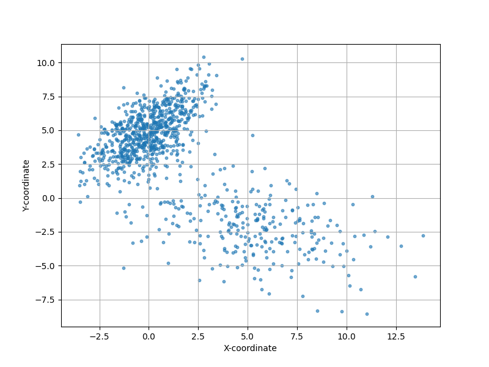
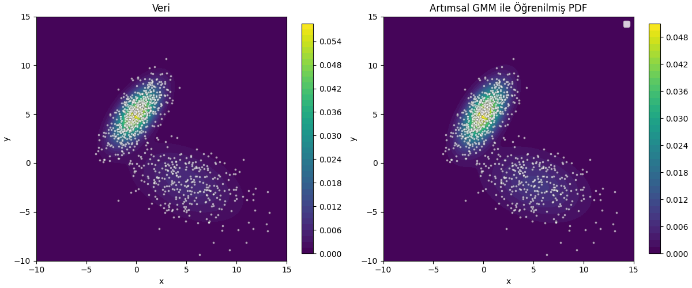

Gaussian Karışım Modelleri (Mixtüre Models / GMM) [1]’de işlendi. O yazı her biri \(d\) boyutlu olabilecek \(G\) tane Gaussian’dan oluşan bir karışım ile veriyi temsil edebilmekten bahsediyordu. Bu tür bir modelde bilinmeyenler \(G\) tane Gaussian’ın parametreleriydi, yani her Gaussian için D x 1 boyutunda bir \(\mu\), D x D boyutunda bir \(\Sigma\), ve tüm karışım için karışım seviyelerini gösteren D x 1 boyutunda bir \(\pi\) bulunması gerekiyordu. Eğer [2] notasyonu ile gösterirsek, karışım olasılık dağılım fonksiyonu,
\[ p(x) = \sum _{g=1}^{G} \pi_g N(x | \mu_g, \Sigma_g) \]
oluyordu, ki \(x \in R^{D}\).
Dikkat edersek [1] yazısı veriyi toptan (batch) işleyen bir yaklaşım gösterdi, bu yaklaşım, ki Beklenti-Maksimizasyon (Expectation-Maximization / EM) adıyla bilinir, döngüsünün her adımında verinin tamamını işliyordu. Bu yazıda veriyi azar azar, artımsal şekilde işleyerek yaklaşık EM yapmanın tekniğini göreceğiz. Eğer her veri noktası aynı şekilde dağılmış, bağımsız şekilde geliyorsa uzun vadede bu artımsal öğrenim tekniği normal toptan EM’in bulduğu sonuca yaklaşacaktır.
Notasyon şöyle, veriler \(x_i\) olarak geliyor, \(i\) bir indistir, ve \(i = 1,..,m,m+1\) olarak gider. Bizi ilgilendiren önemli an \(m\) anından \(m+1\) anına geçiş, yani \(m\)’ye kadar olan model parametrelerini \(m+1\)’inci veri gelince ona göre güncellemek.
Bu bağlamda ilk varsayımı, yaklaşıksallamayı şöyle yapalım, tek bir veri noktası eklediğimizde GMM modelinin parametrelerinin çok fazla değişmesini beklemeyiz, o zaman GMM karışımının içindeki \(g\)’inci Gaussian \(x_{i+1}\) verisi üzerinde hesapladığı olasılık / sorumluluk (responsibility) şöyle gösterilebilir,
\[ p^{(m+1)}(C_g | \mathbf{x}_i) \approx p^{(m)}(C_g | \mathbf{x}_i) \qquad (1) \]
Her \(g\) bileşeni için karışım ağırlığı tüm \(m\) verileri üzerinden hesaplanan ortalama sorumluluktur. Bu hesap tabii ki toptan EM mantığından geliyor, referans için [2],
\[ \pi_g^{(m)} = \frac{1}{m} \sum_{i=1}^{m} p^{(m)}(C_g | \mathbf{x}_i) \]
Yeni \(x_{m+1}\) verisi gelince üstteki formül doğal olarak alttaki gibi olur,
\[ \pi_g^{(m+1)} = \frac{1}{m+1} \sum_{i=1}^{m+1} p^{(m+1)}(C_g | \mathbf{x}_i) \]
Şimdi (1)’deki yaklaşıksallamayı kullanırız,
\[ \pi_g^{(m+1)} \approx \frac{1}{m+1} \left( \sum_{i=1}^{m} p^{(m)}(C_g | \mathbf{x}_i) + p^{(m)}(C_g | \mathbf{x}_{m+1}) \right) \]
Hatırlarsak,
\[ \sum_{i=1}^{m} p^{(m)}(C_g | \mathbf{x}_i) = m \pi_g^{(m)} \]
O zaman,
\[ \pi_g^{(m+1)} \approx \frac{1}{m+1} \left( m \pi_g^{(m)} + p^{(m)}(C_g | \mathbf{x}_{m+1}) \right) \]
Burada bir tekrar düzenleme daha yapalım. Eşitliğin sağ tarafını mevcut kestirme hesabı \(\pi_g^{(m)}\) artı bir düzeltme terimi olarak düşünelim. Bunu ortaya çıkartmak için şöyle yazabiliriz,
\[ \pi_g^{(m+1)} \approx \pi_g^{(m)} + \left[ \frac{1}{m+1} \left( m \pi_g^{(m)} + p^{(m)}(C_g | \mathbf{x}_{m+1}) \right) - \pi_g^{(m)} \right] \]
Üstte bir \(\pi_g^{(m)}\) ekledik ve bir tane de çıkarttık, böylece aslında hiçbir değişim yapmamış olduk. Formül hala aynı şey söylüyor. Şimdi köşeli parantez içindekiler için ortak bir bölen \((m+1)\) yaratalım,
\[ \pi_g^{(m+1)} \approx \pi_g^{(m)} + \frac{1}{m+1} \left( m \pi_g^{(m)} + p^{(m)}(C_g | \mathbf{x}_{m+1}) - (m+1)\pi_g^{(m)} \right) \]
Parantez icindeki ifadeleri basitlestirelim,
\[ m \pi_g^{(m)} + p^{(m)}(C_g | \mathbf{x}_{m+1}) - m\pi_g^{(m)} - \pi_g^{(m)} = p^{(m)}(C_g | \mathbf{x}_{m+1}) - \pi_g^{(m)} \]
Geri sokalım,
\[ \pi_g^{(m+1)} \approx \pi_g^{(m)} + \frac{1}{m+1} \left( p^{(m)}(C_g | \mathbf{x}_{m+1}) - \pi_g^{(m)} \right) \]
Böylece karışım ağırlıkları için özyineli güncelleme formülüne erişmiş olduk.
\[ \mu_g^{(m)} = \frac{1}{m \pi_g^{(m)}} \sum_{i=1}^{m} p^{(m)}(C_g | \mathbf{x}_i) \mathbf{x}_i \]
\[ S_g^{(m)} = \sum_{i=1}^{m} p^{(m)}(C_g | \mathbf{x}_i) \mathbf{x}_i = m \pi_g^{(m)} \mu_g^{(m)} \]
\[ S_g^{(m+1)} = S_g^{(m)} + p^{(m+1)}(C_g | \mathbf{x}_{m+1}) \mathbf{x}_{m+1} \]
\[ S_g^{(m+1)} \approx S_g^{(m)} + p^{(m)}(C_g | \mathbf{x}_{m+1}) \mathbf{x}_{m+1} \]
\[ \mu_g^{(m+1)} = \frac{S_g^{(m+1)}}{(m+1) \pi_g^{(m+1)}} \]
\[ \mu_g^{(m+1)} \approx \frac{ S_g^{(m)} + p^{(m)}(C_g | \mathbf{x}_{m+1}) \mathbf{x}_{m+1} }{ (m+1) \pi_g^{(m+1)} } \]
Now substitute \(S_g^{(m)} = m \pi_g^{(m)} \mu_g^{(m)}\) and the earlier expression for \(\pi_g^{(m+1)}\):
\[ \mu_g^{(m+1)} \approx \frac{ m \pi_g^{(m)} \mu_g^{(m)} + p^{(m)}(C_g | \mathbf{x}_{m+1}) \mathbf{x}_{m+1} }{ (m+1) \left[ \pi_g^{(m)} + \frac{1}{m+1} \left( p^{(m)}(C_g | \mathbf{x}_{m+1}) - \pi_g^{(m)} \right) \right] } \]
\[ (m+1) \pi_g^{(m+1)} = m \pi_g^{(m)} + p^{(m)}(C_g | \mathbf{x}_{m+1}) \]
\[ \mu_g^{(m+1)} \approx \frac{ m \pi_g^{(m)} \mu_g^{(m)} + p^{(m)}(C_g | \mathbf{x}_{m+1}) \mathbf{x}_{m+1} }{ m \pi_g^{(m)} + p^{(m)}(C_g | \mathbf{x}_{m+1}) } \]
\[ \mu_g^{(m+1)} = \mu_g^{(m)} + \frac{ p^{(m)}(C_g | \mathbf{x}_{m+1}) }{ m \pi_g^{(m)} + p^{(m)}(C_g | \mathbf{x}_{m+1}) } \left( \mathbf{x}_{m+1} - \mu_g^{(m)} \right) \]
\[ m \pi_g^{(m)} + p^{(m)}(C_g | \mathbf{x}_{m+1}) \approx (m+1) \pi_g^{(m+1)} \]
\[ \mu_g^{(m+1)} \approx \mu_g^{(m)} + \frac{1}{m+1} \cdot \frac{ p^{(m)}(C_g | \mathbf{x}_{m+1}) }{ \pi_g^{(m)} } \left( \mathbf{x}_{m+1} - \mu_g^{(m)} \right) \]
\[ \Sigma_g^{(m)} = \frac{1}{m \pi_g^{(m)}} \sum_{i=1}^{m} p^{(m)}(C_g | \mathbf{x}_i) (\mathbf{x}_i - \mu_g^{(m)}) (\mathbf{x}_i - \mu_g^{(m)})^T \]
\[ T_g^{(m)} = \sum_{i=1}^{m} p^{(m)}(C_g | \mathbf{x}_i) (\mathbf{x}_i - \mu_g^{(m)}) (\mathbf{x}_i - \mu_g^{(m)})^T = m \pi_g^{(m)} \Sigma_g^{(m)} \]
\[ T_g^{(m+1)} \approx T_g^{(m)} + p^{(m)}(C_g | \mathbf{x}_{m+1}) (\mathbf{x}_{m+1} - \mu_g^{(m+1)}) (\mathbf{x}_{m+1} - \mu_g^{(m+1)})^T \]
\[ (\mathbf{x}_{m+1} - \mu_g^{(m+1)}) \approx (\mathbf{x}_{m+1} - \mu_g^{(m)}) \]
\[ T_g^{(m+1)} \approx T_g^{(m)} + p^{(m)}(C_g | \mathbf{x}_{m+1}) (\mathbf{x}_{m+1} - \mu_g^{(m)}) (\mathbf{x}_{m+1} - \mu_g^{(m)})^T \]
\[ \Sigma_g^{(m+1)} = \frac{T_g^{(m+1)}}{(m+1) \pi_g^{(m+1)}} \]
\[ \Sigma_g^{(m+1)} \approx \frac{ T_g^{(m)} + p^{(m)}(C_g | \mathbf{x}_{m+1}) (\mathbf{x}_{m+1} - \mu_g^{(m)}) (\mathbf{x}_{m+1} - \mu_g^{(m)})^T }{ (m+1) \pi_g^{(m+1)} } \]
Using \(T_g^{(m)} = m \pi_g^{(m)} \Sigma_g^{(m)}\) and the expression for \(\pi_g^{(m+1)}\), we get:
\[ \Sigma_g^{(m+1)} \approx \frac{ m \pi_g^{(m)} \Sigma_g^{(m)} + p^{(m)}(C_g | \mathbf{x}_{m+1}) (\mathbf{x}_{m+1} - \mu_g^{(m)}) (\mathbf{x}_{m+1} - \mu_g^{(m)})^T }{ m \pi_g^{(m)} + p^{(m)}(C_g | \mathbf{x}_{m+1}) } \]
\[ \Sigma_g^{(m+1)} = \Sigma_g^{(m)} + \frac{ p^{(m)}(C_g | \mathbf{x}_{m+1}) }{ m \pi_g^{(m)} + p^{(m)}(C_g | \mathbf{x}_{m+1}) } \left[ (\mathbf{x}_{m+1} - \mu_g^{(m)}) (\mathbf{x}_{m+1} - \mu_g^{(m)})^T - \Sigma_g^{(m)} \right] \]
\[ \Sigma_g^{(m+1)} \approx \Sigma_g^{(m)} + \frac{1}{m+1} \cdot \frac{ p^{(m)}(C_g | \mathbf{x}_{m+1}) }{ \pi_g^{(m)} } \left[ (\mathbf{x}_{m+1} - \mu_g^{(m)}) (\mathbf{x}_{m+1} - \mu_g^{(m)})^T - \Sigma_g^{(m)} \right] \]
from scipy.stats import multivariate_normal
def generate_gmm_data(weights, means, covs, n_samples):
n_components = len(weights)
data = np.zeros((n_samples, 2))
component_choices = np.random.choice(n_components, size=n_samples, p=weights)
for i in range(n_components):
indices = np.where(component_choices == i)[0]
n_points_to_sample = len(indices)
if n_points_to_sample > 0:
data[indices, :] = np.random.multivariate_normal(
mean=means[i],
cov=covs[i],
size=n_points_to_sample
)
shuffle_indices = np.arange(len(data))
np.random.shuffle(shuffle_indices)
res_data = data[shuffle_indices]
return res_data
def gmm_pdf(x, y, weights, means, covs):
"""(x,y) noktasinda GMM olasilik yogunlugunu hesapla"""
z = 0
for i in range(len(weights)):
rv = multivariate_normal(means[i], covs[i])
z += weights[i] * rv.pdf([x, y])
return z
weights = [0.7, 0.3]
means = [
[0, 5],
[5, -2]
]
covs = [
[[2, 1.5], [1.5, 3]],
[[10, -3], [-3, 5]]
]
n_points = 1000
# Generate data points
gmm_data = generate_gmm_data(weights, means, covs, n_points)
plt.figure(figsize=(8, 6))
plt.scatter(gmm_data[:, 0], gmm_data[:, 1], alpha=0.6, s=10)
plt.xlabel("X-coordinate")
plt.ylabel("Y-coordinate")
plt.grid(True)
plt.savefig('stat_112_gmminc_01.png')
def responsibilities(x, weights, means, covs):
p = np.zeros(len(weights))
for k in range(len(weights)):
p[k] = weights[k] * multivariate_normal(mean=means[k], cov=covs[k]).pdf(x)
denom = p.sum()
if denom == 0:
return np.ones_like(p) / len(p)
return p / denom
def log_likelihood(X, weights, means, covs):
ll = 0.0
for x in X:
px = sum(weights[k] *
multivariate_normal(mean=means[k], cov=covs[k]).pdf(x)
for k in range(len(weights)))
ll += np.log(px + 1e-12) # guard against log(0)
return ll
data = generate_gmm_data(weights, means, covs, n_points)
n_components = 2
d = data.shape[1]
weights_tmp = np.ones(n_components) / n_components
means_tmp = np.random.randn(n_components, d) * 5
covs_tmp = np.array([np.eye(d) for _ in range(n_components)])
m_total = 1
N_g = weights * m_total
for idx in range(len(data)):
x = data[idx]
r = responsibilities(x, weights_tmp, means_tmp, covs_tmp)
m_total += 1.0
for k in range(n_components):
r_k = r[k]
N_old = N_g[k]
N_new = N_old + r_k
N_g[k] = N_new
# Update mixing weight
weights_tmp[k] = N_new / m_total
# Update mean
mu_old = means_tmp[k].copy()
means_tmp[k] = mu_old + (r_k / N_new) * (x - mu_old)
# Update covariance
diff_var = (x - mu_old).reshape(-1, 1)
covs_tmp[k] = covs_tmp[k] + (r_k / N_new) * (diff_var @ diff_var.T - covs_tmp[k])
ll = log_likelihood(data, weights_tmp, means_tmp, covs_tmp)
print (ll)-4464.929418673403print (weights_tmp)
print (means_tmp)
print (covs_tmp)[0.31203614 0.68796386]
[[ 5.2066373 -2.21923644]
[ 0.02514121 4.96786565]]
[[[ 9.21310167 -2.07072758]
[-2.07072758 4.41050016]]
[[ 1.93204572 1.5493632 ]
[ 1.5493632 3.63932262]]]xs = np.linspace(-10, 15, 120)
ys = np.linspace(-10, 15, 120)
Xg, Yg = np.meshgrid(xs, ys)
Z_true = np.zeros_like(Xg)
Z_learned = np.zeros_like(Xg)
for i in range(Xg.shape[0]):
for j in range(Xg.shape[1]):
pt = np.array([Xg[i, j], Yg[i, j]])
Z_true[i, j] = sum(weights[k] *
multivariate_normal(mean=means[k], cov=covs[k]).pdf(pt)
for k in range(len(weights)))
Z_learned[i, j] = sum(weights_tmp[k] *
multivariate_normal(mean=means_tmp[k], cov=covs_tmp[k]).pdf(pt)
for k in range(n_components))
fig, axes = plt.subplots(1, 2, figsize=(12, 5), constrained_layout=True)
ax1, ax2 = axes
cf1 = ax1.contourf(Xg, Yg, Z_true, levels=40, cmap='viridis')
ax1.scatter(data[:, 0], data[:, 1], c='white', s=8, alpha=0.6,
edgecolors='k', linewidth=0.2)
ax1.set_title("Veri")
ax1.set_xlabel("x")
ax1.set_ylabel("y")
fig.colorbar(cf1, ax=ax1, fraction=0.046, pad=0.04)
cf2 = ax2.contourf(Xg, Yg, Z_learned, levels=40, cmap='viridis')
ax2.scatter(data[:, 0], data[:, 1], c='white', s=8, alpha=0.6,
edgecolors='k', linewidth=0.2)
ax2.set_title(u'Artımsal GMM ile Öğrenilmiş PDF')
ax2.set_xlabel("x")
ax2.set_ylabel("y")
ax2.legend()
fig.colorbar(cf2, ax=ax2, fraction=0.046, pad=0.04)
plt.savefig('stat_112_gmminc_02.png')
[devam edecek]
Kaynaklar
[1] Bayramli, Istatistik, Gaussian Karışım Modeli (GMM) ile Kümelemek
[2] Zheng, Recursive Gaussian Mixture Models for Adaptive Process Monitoring
[3] Titterington, Recursive Parameter Estimation using Incomplete Data
[4] Zivkovic, Recursive unsupervised learning of finite mixture models